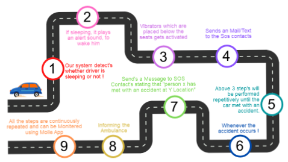

SafeRide
In this app , the user who want to use this technology should register and add details of the vehicle as well as the family members So that message reaches them as driver falls asleep . The few screenshots of application’s user interface which are developed are given below:
About
The Sleep Monitoring Device is a device specifically designed for drivers on long journeys. It tracks your alertness levels and helps you stay awake and alert while driving. The device alerts you when it detects that you are drowsy,and help you stay awake and alert on the road. With the Sleep Monitoring Device for Drivers, you can drive safely and confidently on long journeys. It will inform your family members that u have given during registration in the app, so that they can wake you up by calling .
How to Use
- Install the app on your mobile phone and register and add details which are required once u buy the device i.e with web cam along with vibrating motor,speaker.
- Once the vehicle is on the device will automatically detect when you are drowsy and alert you
- Follow the tips provided by the device to stay awake and alert
- Take regular breaks and stretch your legs to prevent drowsiness while driving
Roadmap
Contact
For more information about the Sleep Monitoring System for Drivers, please contact us at:
Address: Sleep Monitoring Inc.
18th Main Street, Yelahanka, Bangalore 12345
Phone: +91 456-7890
Email: info@sleepmonitoring.com